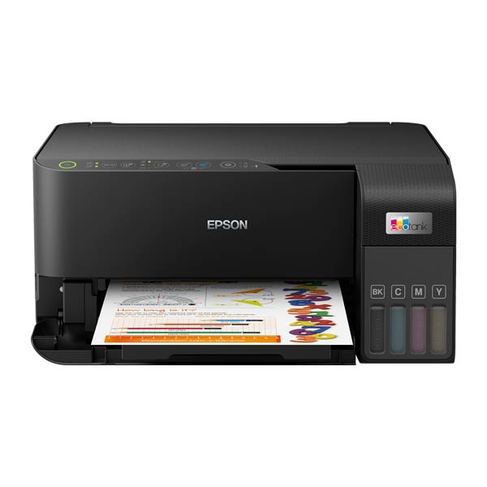

Epson EcoTank L3250 WiFi Printer
- Printer Növü: Çap, skan, kopyalama
-
Nozzle Konfiqurasiyası: 180x1 (Qara), 59x1 (Cyan, Magenta, Yellow)
- Texnologiya: On-demand inkjet (Piezoelectric)
- Maksimum Təsvir Keyfiyyəti: 5760x1440 dpi
-
Çap Sürəti: Foto (10x15 sm): ~69 saniyə (çərçivəli) / 90 saniyə
(çərçivəsiz)
- İlk Səhifə Çap Müddəti: 10 saniyə (qara), 16 saniyə (rəngli)
- Zəmanət: 12 Ay